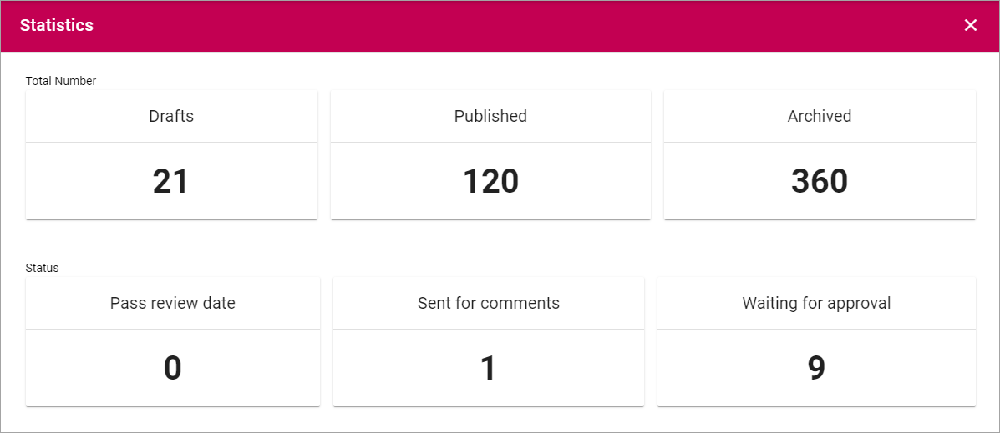
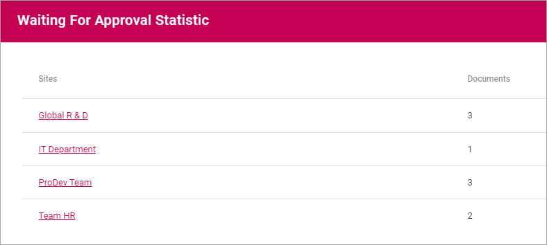

Statistics¶
Here you can se various statistics for Controlled Documents, for example:
When you click a section you will get:
- Drafts: A list of sites with drafts. The list displays the number of drafts per site.
- Published: A list of sites with published documents. The list displays the number of published documents per site.
- Archived: A list of Controlled Documents archives in this tenant. You can click a link to go to the archive and find out more, if you have the permission to access the archive. Each archive is a separate site and has it’s own permissions.
- Pass review date: This is the same list as “Expired Reviews”.
- Sent for comments: A list of sites with active Sent for Comments workflows. The list displays the number of active workflows per site.
- Waiting for approval: A list of sites with active Approval workflows. The list displays the number of active workflows per site.
When links to sites are displayed, you can click the link to go to a site to find out more.
Here’s an example of a “Waiting for approval” list:
